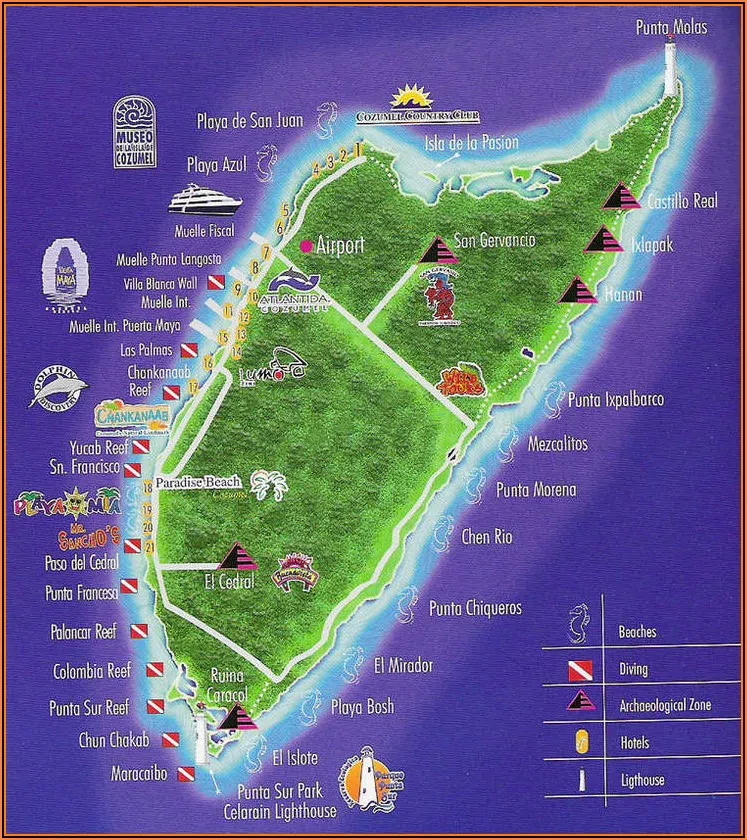

Top Attractions
Mr Sanchos Beach Club Cozumel
Chankanaab Adventure Beach Park
Mayan Bee Sanctuary
Paradise Beach
Palancar Reef
Map of Cozumel

Gallery
Mr Sanchos Beach Club, Cozumel
Zip line at the Chankanaab Adventure Park
Presentation at the Mayan Bee Sanctuary
ATVs on the east beach trail
Mayan ruins
Snorkeling off the beach
Resources
Cozumel History and Geography (Wikipedia)
15 Best things to do in Cozumel (TripAdvisor)